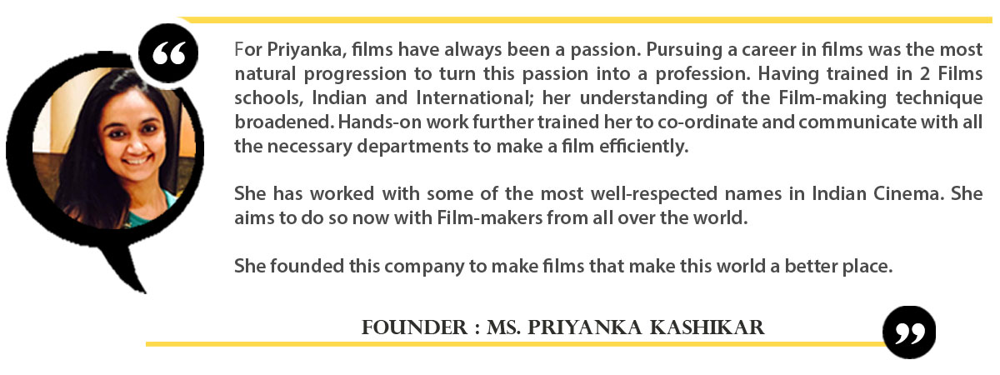
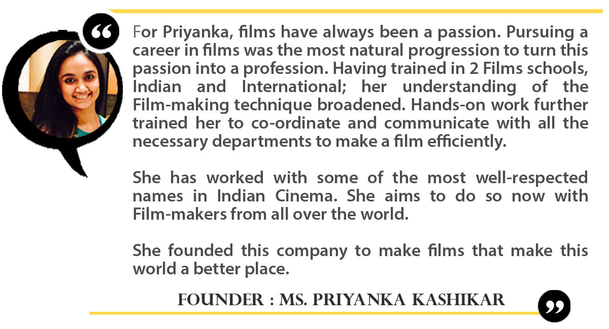

We are a bunch of young & enthusiastic people who are passionate towards cinema. We want to create content with a conscience.
Good films are a perfect blend between the audio & visual. Similarly, we strive towards blending dramatic storytelling with social impact.
Our company rests on the belief that when we make films from the heart it reaches; and makes a firm place in the hearts of every member of the audience.


“Priyanka is the alumni of New York Film Academy, where she studied Screenwriting; and Whistling woods where she pursued Film-making. Making a successful film entails maintaining a fine balance between the aesthetics and logistics of the film. She credits her understanding of this balance to her work experience with talented film-maker, Sriram Raghavan.
Becoming a Producer was the most logical step for her, as she believes films are a powerful tool for change and would like to use this platform to make films that inspire.“
Priyanka Kashikar : Writer & Producer
Sai Pawar is a Writer/ Director of Indian origin. He has a Masters of Fine Arts in Filmmaking from New York Film Academy and has worked in New York and LA in various capacities with companies like Manhattan Place Entertainment, Sony Pictures, Paramount Studios and RPM talent. His commercials include work for brands like Kohler, Loud Shout and more. His short film “Color of War” has played in Chicago, New York, Los Angeles, New Mexico, Istanbul, Estonia, India, Bulgaria, and in other various film festivals.
Currently, he is directing commercials in Mumbai and working as an Executive Producer on a Monaco based Sci-fi TV series ‘Recurso Universum.’
Sai Pawar : Writer & Director
Diggi (Digvijay) Singh is an LA based Writer/Director. He's a graduate of the prestigious St. Xavier's College (Mumbai) and a UCLA alum. His feature MAYA was critically acclaimed at several international festivals (Rotterdam, Busan, Flanders, Montreal). MAYA was the 1st Runner Up at Toronto (TIFF) after Amelie. It was recommended to screen at the American Museum of Moving Image by Martin Scorsese.
His current script 'RATCATCHER' was a semi-finalist and placed in the Top 50 scripts at the prestigious Academy (Oscars) Nicholls Fellowship for excellence in screenwriting. He's attached to direct the script for Kundalini Pictures/On the Road India.
Diggi Singh : Writer & Director
Diksha Grover is an independent film maker. She completed her film education from the National Institute of Design, Ahmedabad. Her first fiction film ‘Vanity Box’ won several awards & nominations across the globe. Later, her short diploma project "I'll tell you" won acclaim with the Indian National Film Award 2013 and at several international film festivals. Before her film-making career, she worked as a journalist with several print, radio and TV media houses.
The flavour of realism is therefore prevalent in her work. She has filmed documentaries for the United Nations in Cambodia. She has also been a professional theatre artist in New Delhi and worked with Arvind Gaur, Dramanon and acted in short films. Mentored under the leading ad-film maker Mr. Prakash Varma from Nirvana Films; Diksha today runs MG Productions and collaborates with leading production houses as a film director.
Diksha Grover : Writer & Director
A post graduate in Film and Television production, Himanshu went on to study Cinematography at New York Film Academy training under teachers from AFI. He’s been working as a freelance cinematographer since 2012 and has worked on various international short films, been part of the TV series Person of Interest and The Amazing Spiderman 2.
Since his return to India in 2013, he has shot two regional features including the mega hit Gujjubhai The Great, two primetime finite television shows with Goldie Behl and has directed and shot a number of commercials for brands like BMW, Kohler, Blackberrys, HP and ICICI. Himanshu is also a photographer, editor and colorist.
Himanshu Dubey : Cinematographer
A graduate of Sound Design for Visual Media program at Vancouver Film School, Aditya specialises in various aspects of production and post production audio. With over 10 years of experience in the audio industry, Aditya has mastered the various aspects of sound that have helped him deliver great sounding projects, every single time. Having worked with filmmakers like Nagraj Manjule, Kabir Khan, Nagesh Kukunoor, Onir, Prasad Oak, Devashish Makhija and Aamir Khan, it has only made Aditya better at his skills and encouraged him to produce great sounding content.
Lastly, as a film enthusiast, Aditya has always supported independent cinema and has focused on collaborations and telling great stories.
Aditya Yadav : Sound Designer/ Production Sound Mixer
Copyright © 2018 Created by MIBT